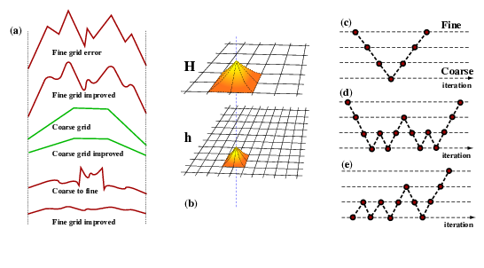

Methods for Solving Numerical Problems¶
Solving the matrix problem¶
Once the problem has been rendered into a matrix form, the finite element part is over ! The rest is matrix algebra. There are a number of standard techniques for solving such systems which we briefly outline in the context of the Earth dynamics problem. In most dynamic systems, the FEM can be formulated in a time-explicit manner (cf discrete element methods) that is robust and simple to implement, or using implicit methods which are more elaborate and are often more temperamental but which are capable of covering much larger time increments at each step. In our case, however, the fact that inertia is negligible, leaves the equation of motion independent of time and it can only be solved implicitly.
The original implicit solver in FEM was to build the matrix equation and solve it directly using an method such as Crout elimination. This can be done relatively efficiently by exploiting the fact that the finite element matrices are quite tightly banded. Unfortunately, direct solution methods are limited to “small” problems since the solution-time scales very rapidly with the number of unknowns (in the worst case, as \(N^3\) where \(N\) is the number of unknowns, and even in the best case as \(N^2\)).
Iterative methods can achieve much better performance than this once the problems start to become larger. For example, preconditioned conjugate gradient methods can obtain a solution to a given accuracy in a time proportional to \(N\log N\). However, preconditioning can be highly time consuming and may need careful tailoring for different problems as the iterations may not converge (compare this to our need to carefully choose how to discretise problems in our finite difference examples earlier)
The optimal method, in theory, for the Stokes problem is multigrid which, when properly formulated, can find a solution in a time proportional to \(N\).
An additional problem arises with direct methods. The number of unknowns in the vector \(\mathbf{d}\) is slightly less than \(n_{\rm dim}\) times the number of nodal points once the prescribed boundary velocities have been included. For a well-resolved problem the stiffness matrix \(\mathbf{K}\) is often too large to be stored in full, even accounting for its sparsity. Some iterative methods can operate with only the element stiffness matrices which can be built and used on the fly. Although this requires significantly more computations, it can make some large problems soluble where otherwise memory limitations would block solution. It is also possible that computation can be more efficient than retrieving carefully-packed matrix coefficents and, in this case, element-by-element methods can be competitive for speed in their own right.
Some simple iterative schemes {\bf for positive definite systems} are described next. Far more that this exist and many are more efficient but this usually depends on the actual application area.
Jacobi relaxation¶
One of the simplest iterative methods of residual reduction is the Jacobi iteration. Given an approximate solution, \(\mathbf{d}^{(0)}\), to \(\mathbf{Kd}=\mathbf{f}\), an improved solution, \( \mathbf{d}^{(1)}\) is found by
It is clear that each iteration cycle requires only one matrix-vector multiplication. However, the convergence rate for this algorithm is usually poor and a large number of cycles is required.
Gauss-Seidel relaxation¶
A trivial modification to the Jacobi iteration is to use updated information on the \(\mathbf{d}\) componenents immediately they become available. This results in the Gauss-Seidel iteration which is considerably more efficient than Jacobi. It can, however, be harder to code efficiently because the independence of each degree of freedom during one iteration disappears.
Conjugate Gradients¶
A more sophisticated iterative procedure for obtaining solutions to linear systems is the conjugate gradient method. This is a development of the method of steepest descent with better convergence properties. The `search directions’ along which the solution is improved are denoted by \(\mathbf{s}\) and do not coincide with the residual vectors. In the following algorithm an inner product is denoted by \((\cdot,\cdot)\).
Conjugate Gradient Algorithm
\(\quad\) \(k=0; \mathbf{u}_0 = {\bf 0}; \mathbf{r}_0 = \mathbf{f}\)
\(\quad\) while \((\mathbf{r}_k \not= {\bf 0})\)
\(\quad\) \(\quad\) \(k = k + 1\)
\(\quad\) \(\quad\) if \((k=1)\)
\(\quad\) \(\quad\) \(\quad\) \(\mathbf{s}_1 = \mathbf{r}_0\)
\(\quad\) \(\quad\) else
\(\quad\) \(\quad\) \(\quad\) \(\beta = (\mathbf{r}_{k-1},\mathbf{r}_{k-1})/(\mathbf{r}_{k-2},\mathbf{r}_{k-2})\)
\(\quad\) \(\quad\) \(\quad\) \(\mathbf{s}_k = \mathbf{r}_{k-1} + \beta \mathbf{s}_{k-1}\)
\(\quad\) \(\quad\) end
\(\quad\) \(\quad\) \(\alpha = (\mathbf{r}_{k},\mathbf{r}_{k})/(\mathbf{s}_{k},{\bf A s}_{k})\)
\(\quad\) \(\quad\) \(\mathbf{u}_k = \mathbf{u}_{k-1} + \alpha \mathbf{s}_{k}\)
\(\quad\) \(\quad\) \(\mathbf{r}_k = \mathbf{r}_{k-1} - \alpha {\bf As}_{k}\)
\(\quad\) end
\(\quad\) \(\mathbf{u} = \mathbf{u}_k\)
In this case the use of residual vectors from previous iteration steps is necessary to ensure that there is only one matrix-vector multiplication. The convergence of the conjugate gradient algorithm is fastest when \(\mathbf{K}\) is close to the identity matrix. For a general matrix the reduction of the residual may be slow through the first few iterations then picks up speed as the procedure progresses. This property makes this iterative loop inefficient for relatively small numbers of iterations.
Note that the reduction of the residual is a measure of “improvement” of the solution which is internal to the iteration. Although the magnitude of the residual is usually reduced monotonically, the true error, when it can be calculated, may increase as well as decrease. In order to improve the rate of convergence it is necessary to reformulate the problem such that the solution to a nearly diagonal system is sought. This procedure is known as preconditioning. The system \(\mathbf{Kd} = \mathbf{f}\) is transformed to a case which can be solved more rapidly by the conjugate gradient algorithm:
where
The preconditioning matrix \(\bf M\) is defined by \({\bf M} = {\bf C}^2\), and the preconditioned conjugate gradient algorithm is then:
Preconditioned Conjugate Gradient Algorithm
\(\quad\) \( k = 0; \mathbf{u}_0 = {\bf 0}; \mathbf{r}_0 = \mathbf{f}\)
\(\quad\) while \((\mathbf{r}_k \not= {\bf 0})\)
\(\quad\) \(\quad\) solve \({\bf M z}_k = \mathbf{r}_k\)
\(\quad\) \(\quad\) \( k = k + 1 \)
\(\quad\) \(\quad\) if \((k=1)\)
\(\quad\) \(\quad\) \(\quad\) \(\mathbf{s}_1 = {\bf z}_0\)
\(\quad\) \(\quad\) else
\(\quad\) \(\quad\) \(\quad\) \(\beta = (\mathbf{r}_{k-1},{\bf z}_{k-1})/(\mathbf{r}_{k-2},{\bf z}_{k-2})\)
\(\quad\) \(\quad\) \(\quad\) \(\mathbf{s}_k = {\bf z}_{k-1} + \beta \mathbf{s}_{k-1}\)
\(\quad\) \(\quad\) end
\(\quad\) \(\quad\) \(\alpha = (\mathbf{r}_{k},{\bf z}_{k})/(\mathbf{s}_{k},{\bf A s}_{k})\)
\(\quad\) \(\quad\) \(\mathbf{d}_k = \mathbf{d}_{k-1} + \alpha \mathbf{s}_{k}\)
\(\quad\) \(\quad\) \(\mathbf{r}_k = \mathbf{r}_{k-1} - \alpha \mathbf{Ks}_{k}\)
\(\quad\) end
\(\quad\) \(\mathbf{d} = \mathbf{d}\mathbf{d}_k\)
The choice of \(\bf M\) has a dramatic effect on the rate of convergence of the method. Not only must the preconditioner improve the convergence properties of the system, but the solution to \({\bf Mz} = \mathbf{r}\) must be inexpensive. Clearly if \({\bf M} = \mathbf{K}\) then exact convergence is obtained in one iteration but the solution of the preconditioning step becomes impossible. The simplest preconditioner, and the one employed here, is to set \({\bf M} = \mathrm{diag}(\mathbf{K})\). This is not only simple to calculate (and invert) but requires very little storage. For simple systems the reduction of the residual is noticeably improved during the initial iterations. However, it is not clear how well this simple preconditioner will work when strong viscosity contrasts are present and off-diagonal terms in \(\mathbf{K}\) may be large.
Multigrid¶

The multigrid method works by formulating the finite element problem on a number of different scales - usually a set of grids which are nested one within the other sharing common nodes. The solution progresses on all of the grids at the same time with each grid eliminating errors at a different scale. The effect is to propogate information very rapidly between different nodes in the grid which would otherwise be prevented by the local support of the element shape functions. In fact, by a single traverse from fine to coarse grid and back, all nodes in the mesh can be directly connected to every other – allowing nodes which are physically coupled but remote in the mesh to communicate directly during each iteration cycle.
The multigrid effect relies upon using an iterative solver on each of the grid resolutions which acts like a smoother on the residual error at the characteristic scale of that particular grid. People commonly use Gauss-Seidel iteration because it has exactly this property. On the coarsest grid it is possible to use a direct solver because the number of elements is usually very small.
For an elliptic operator such as the Laplacian of the Stokes’ problem encountered in the algorithm above the discretized problem is now written
where the \(h\) subscript indicates that the problem has been discretized to a mesh of fineness \(h\). As before an initial estimate of the velocity can be improved by determining the solution to
where \({\bf r}_h\) is the residual on this mesh, and \(\delta {\bf d}\) is a correction to \(\bf d\) which reduces \(\bf r\). In the iterative methods described above, the initial approximation and the correction are found by solving a simplified version of the problem at the same gridpoints in such a way that computation time is reduced dramatically. However, another approach to the problem is to obtain an approximate solution by solving the problem on a more coarse grid. The reduction of the number of degrees of freedom also leads to a more manageable problem which can be solved fast. The correction term is therefore:
where \(H\) indicates a coarser level of discretization. The residual on the coarser mesh is determined by the use of a projection (restriction) operator:
and the approximate solution is then interpolated from the coarse to fine grid using an interpolation operator:
The power of the algorithm is in a recursive application. The coarse grid correction is also calculated through the use of a still-coarser grid and so on, until the problem is so small that an exact solution can be obtained very rapidly. One very simple, but instructive, algorithm for hierarchical residual reduction is the sawtooth cycle (the same logical layout as the multigrid V cycle).
Multigrid Algorithm
\(\quad\) Obtain approximate solution, \({\bf d}_h\) at highest level \(h\)
\(\quad\) Calculate residual: \({\bf r}_h = {\bf f}_h - {\bf K}_h {\bf d}_h\)
\(\quad\) Project residual by N levels to level \(h-N\)
\(\quad\) \(\quad\) \({\bf r}_{h-i} = {\bf P}_{h-i}^{h-i+1} {\bf r}_{h-i+1}\)
\(\quad\) Solve exactly: \(\delta {\bf u}_{h-N} = {\bf A}_{h-N} {\bf r}_{h-N}\)
\(\quad\) Interpolation steps:
\(\quad\) \(\quad\) \({\bf r}_{h-i+1} += {\bf I}_{h-i}^{h-i+1} {\bf K}_{h-i} \delta {\bf d}_{h-i}\)
\(\quad\) \(\quad\) Improve \(\delta {\bf d}_{h-i+1}\)
\(\quad\) \({\bf d}_h += \delta {\bf d}_h\)
The step in which the velocity correction is “improved” is an iterative method for reducing the residual at the current level such as those described above. Although many methods of residual reduction are available, the class of methods which often work best with the multigrid approach are relaxation iterations which are also effective {\sl smoothing} operators. At each level the smoothing operators reduce the residual most strongly on the scale of the discretization – the hierarchical nesting of different mesh sizes allows the residual to be reduced at each scale very efficiently. (see Parsons and Hall). The Jacobi relaxation above is a suitable algorithm for multigrid enhancement but still converges too slowly to build into an efficient code. Preconditioned conjugate gradient methods can better reduce the residual for the same number of operations but may not possess the smoothing properties which benefit the multigrid approach. The local inverse method appears to have both the smoothing and rapid convergence properties for the Stokes’ problem which are required for effective multigridding.
The projection and interpolation operators have to be chosen fairly carefully to avoid poor approximations to the problem at the coarse levels and ineffectual corrections propogated to the fine levels. The interpolation operator is defined naturally from the shape functions at the coarse levels. The projection operator is then defined to complement this choice (the operators should be adjoint).
The sawtooth cycle given in this section is the simplest multigrid algorithm. Developments include improving the residual at each level of the {\sl projection}, known as a v-cycle, and cycles in which the residual is interpolated only part way through the hierarchy before being reprojected and subjected to another set of improvements (a w-cycle).
The Full Multigrid Algorithm (see Brandt) introduces a further level of complexity. Instead of simply casting the problem at a single level and projecting/improving the residual on a number of grids, the whole problem is defined for all the grids. In this way the initial fine-grid approximation is obtained by interpolating from the solution to the coarsest grid problem. The solution at each level is still obtained by projecting to the finest level and reducing the residual at each projection step. The result is some sort of “Loch Ness Monster” cycle.
One of the major problems in multigrid is knowing how best to represent material properties at different levels of grid coarseness in order to obtain the optimal convergence rate. This has a simple solution in the particle in cell finite element methods which we will discuss later.
A Practical Mixed Formulation¶
The fact that the mixed method does not provide a positive definite matrix is a potentially serious difficulty. It can be avoided by the following rearrangement which forms the Schur complement of the original system.Multiplying out the mixed method equations gives the conservation equations for momentum and mass
Multiply equation \( (\ref{eq:stokes}) \) throughout by \({\bf G}{\bf K}^{-1}\) to give
where the first term is zero due to the incompressibility condition. Then the equation system is in the form \(\hat{\bf K}{\bf p} = \hat{\bf f}\), where \(\hat{\bf K}\) is now positive definite, and so a conjugate gradient method can be used:
Conjugate Gradient, Schur Complement
\(\quad\) \(\Red{ k = 0; {\bf p}_0 = {\bf 0}; {\bf r}_0 = \hat{\bf f}}\)
\(\quad\) while \(({\bf r}_k \not= {\bf 0})\)
\(\quad\) \(\quad\) \( k = k + 1 \)
\(\quad\) \(\quad\) if \((k=1)\)
\(\quad\) \(\quad\) \(\quad\) \({\bf s}_1 = {\bf r}_0\)
\(\quad\) \(\quad\) else
\(\quad\) \(\quad\) \(\quad\) \(\beta = ({\bf r}_{k-1},{\bf r}_{k-1})/({\bf r}_{k-2},{\bf r}_{k-2})\)
\(\quad\) \(\quad\) \(\quad\) \({\bf s}_k = {\bf r}_{k-1} + \beta {\bf s}_{k-1}\)
\(\quad\) \(\quad\) end
\(\quad\) \(\quad\) \(\Red{{\bf w} = \hat{\bf K} {\bf s}}\)
\(\quad\) \(\quad\) \(\alpha = ({\bf r}_{k},{\bf r}_{k})/({\bf s}_{k},{\bf w})\)
\(\quad\) \(\quad\) \({\bf p}_k = {\bf p}_{k-1} + \alpha {\bf s}_{k}\)
\(\quad\) \(\quad\) \({\bf r}_k = {\bf r}_{k-1} - \alpha {\bf w}\)
\(\quad\) end
\(\quad\) \({\bf d} = {\bf d}_k\)
However, it is not possible to obtain \(\hat{\bf K}\) or \(\hat{\bf f}\) directly because the form of \({\bf K}^{-1}\) is not known. This means we are stuck on steps 1 and 10 in this algorithm. Luckily, we can still take these steps because we are only interested in the effect of the operation of the matrix on a given vector. The modification of the algorithm looks like this:
Conjugate Gradient Algorithm (No Matrix Construction)
\(\quad\) \(\Green{{\bf r}_0 = {\bf G K}^{-1} {\bf f}}\):
\(\quad\) \(\Green{\mathrm{solve:} \;\; {\bf K d} = {\bf f} \;\; \mathrm{for} \;\; \bf d}\)
\(\quad\) \(\Green{\mathrm{set:} \;\; {\bf r}_0 = {\bf G d} = {\bf G K}^{-1} {\bf f}}\)
\(\quad\) while \(({\bf r}_k \not= {\bf 0})\)
\(\quad\) \(\quad\) \( k = k + 1 \)
\(\quad\) \(\quad\) if \((k=1)\)
\(\quad\) \(\quad\) \(\quad\) \({\bf s}_1 = {\bf r}_0\)
\(\quad\) \(\quad\) else
\(\quad\) \(\quad\) \(\quad\) \(\beta = ({\bf r}_{k-1},{\bf r}_{k-1})/({\bf r}_{k-2},{\bf r}_{k-2})\)
\(\quad\) \(\quad\) \(\quad\) \({\bf s}_k = {\bf r}_{k-1} + \beta {\bf s}_{k-1}\)
\(\quad\) \(\quad\) end
\(\quad\) \(\quad\) \(\Green{{\bf w} = \hat{\bf G K}^{-1}{\bf G}^T {\bf s}}\):
\(\quad\) \(\quad\) \(\Green{\textrm{solve:} \;\; {\bf K d} = {\bf G}^T {\bf s} \;\; \textrm{for} \;\; \bf d}\)
\(\quad\) \(\quad\) \(\Green{ \textrm{set:} \;\; {\bf w} = {\bf K d} = {\bf G K}^{-1}{\bf G}^T {\bf s}}\)
\(\quad\) \(\quad\) \(\alpha = ({\bf r}_{k},{\bf r}_{k})/({\bf s}_{k},{\bf w})\)
\(\quad\) \(\quad\) \({\bf p}_k = {\bf p}_{k-1} + \alpha {\bf s}_{k}\)
\(\quad\) \(\quad\) \({\bf r}_k = {\bf r}_{k-1} - \alpha {\bf w}\)
\(\quad\) end
\(\quad\) \({\bf d} = {\bf d}_k\)
Our assumption is that the matrix, \(\hat{\bf K}\) could not be calculated because it would be too time consuming (and self-defeating) to do so, but it is also possible to imagine a case where we would compute the effect of an operator on a vector as a result of a black-box operation not
Time¶
We have concentrated on the solution to equibrium equations without really touching on the way time is evolved in elasticity and slow flow where the equations themselves are independent of time. In the mantle dynamics problem, the energy equation contains time derivatives which the equation of motion lacks so it is unsurprising that these equations require entirely different computational methods.
We almost always want to know the time-history of our simulations, so we generally solve this equation explicitly or semi-implicitly in time.
Variational methods are not generally applicable because the energy equation with its strong advection term does not follow an extremum of some functional. In this case even the weak forms of the equation are quite similar to finite difference equations.